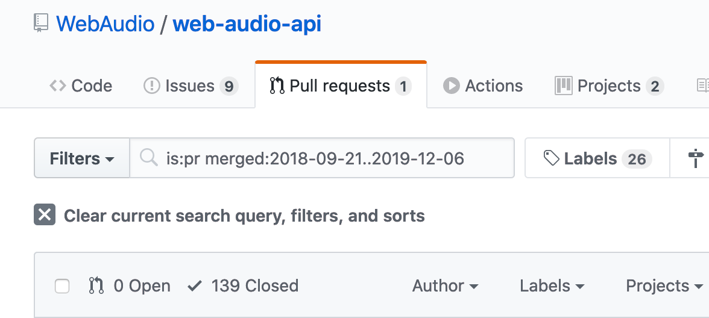
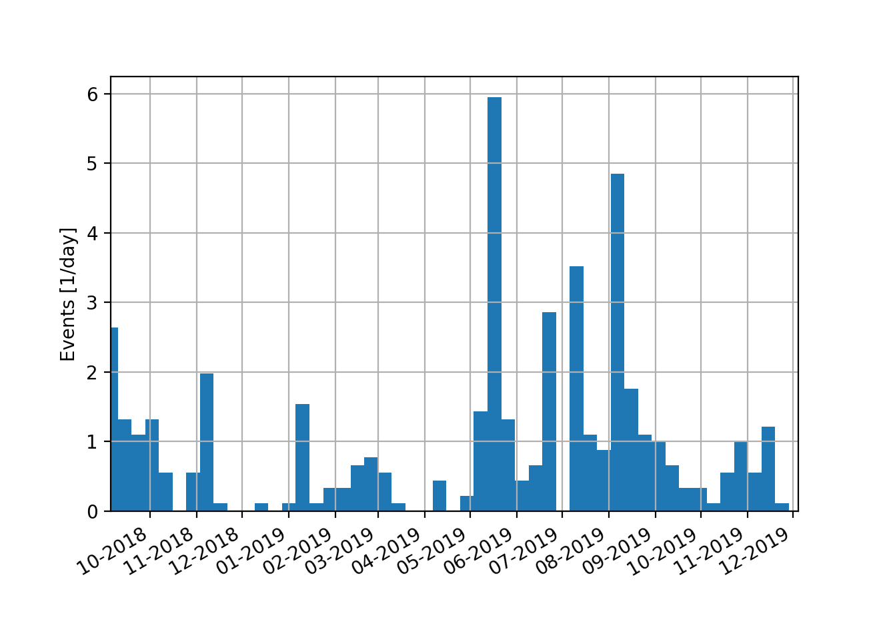

class: center, middle # Recent and future evolution of the Web Audio API <br>(take III) Paul Adenot <span class="big logo">mozilla</span> Web Audio Conference 2019 NTNU, Trondheim --- class: middle ```sh $ git clone git@github.com:padenot/wac-18-slides.git wac-19-slides $ cd wac-19-slides $ sed -i "s/18/19/" index.html $ sed -i "s/TU Berlin/NTNU Trondheim/" index.html ``` --- # Agenda ## Trivia and statistics ## What's new in the spec since WAC'18? ## Where are we in the standardization process? ## What's next? --- class: middle center # Some statistics: pull requests & issues  <https://github.com/WebAudio/web-audio-api/pulls?utf8=%E2%9C%93&q=is%3Apr+merged%3A2018-09-21..2019-12-06> --- class: middle center # Some statistics, commits  --- class: middle # Contributor count ```sh $ git log --color --since=2018-09-21 | grep "Author:" | sort | uniq | wc -l 17 ``` - BBC, Google, Microsoft, Facebook, Mozilla, W3C, etc. - Quite a few people not affiliated - Always thankfull for typo fix, etc. --- # Japanese translation (somehow forgot last time) - <https://g200kg.github.io/web-audio-api-ja/> --- # News in the browser engine market - Edge moves to Chromium - Servo now has a Web Audio API implementation (not complete at all but promising), open for contributions (please ask, it's all in Rust and it's cool😎) --- # Administrative stuff - Raymond Toy from Google is now co-chair of the WG, stepped down as a co-editor (but still do edits!) - Hongchan Choi from Google replaced Raymond as a co-editor --- class: small # Fixes taxonomy - <del>Features</del> - CR process compliance - Bug fixes - Specification holes - Typos - Typos - Typos - Typos - Typos - Typos - Typos - Typos - Typos - Typos - Typos - Typos - Typos - Typos - Typos - Typos - Typos - Typos - Typos - Typos - Typos --- class: center, middle # New in the spec --- # What's new since WAC'18 - Fixes are in (rough) chronological order - Some issue resolutions are small, took 10min to fix - Some issue resolutions are small, took 7 years to fix - A long series of little changes --- # Buffers - `ConvolverNode.buffer`, `WaveShaperNode.curve` can be set more than once - ⚠️ Setting `ConvolverNode.buffer` is synchronous on the main thread - Tried to change it, failed miserably - <https://github.com/WebAudio/web-audio-api-v2/issues/28> --- # Define what linear PCM is - No kidding - Kind of important - <https://webaudio.github.io/web-audio-api/#audio-sample-format> --- # Tail time vs. channel count - Talked about last time - Fix now in the spec (but decided last year) - <https://webaudio.github.io/web-audio-api/#AudioNode-tail> - <https://webaudio.github.io/web-audio-api/#channels-tail-time> --- # A metric ton of AudioWorklet fixes - Hardest part is `WebIDL` and `ECMAScript` integration - Implication of `WebIDL` types on GC - Lots and lots of things were undefined/underspecified/allowed to do bad things - Thanks to proof readers, reviewers and implementers - A couple fixes missing at the moment, getting there --- # PannerNode vs. AudioListener - Order of computation wasn't defined, is now in the ["Rendering an audio graph"](https://webaudio.github.io/web-audio-api/#rendering-loop) section --- # MediaStreamTrack AudioSourceNode legacy nonsense - <https://webaudio.github.io/web-audio-api/#MediaStreamAudioSourceNode-constructors> - Doesn't reflect changes the `MediaStream` - One channel of silence when `ended` --- # Auto-play policy - \#1 polarizing topic - Simple provisions in the spec to allow: - `start()` on `ScheduldSource` to change `"allowed to start"` - `resume()` on `AudioContext` as well - Implementation wise, behaviours vary - Generally safe to call `resume()` from a click/touch handler --- # OfflineAudioContext.suspend rounding - Rounded up, otherwise it's very confusing --- # Biquad/other filter instability - We can't do anything - Suggestion of printing a message in the console, flush `NaN` to zero --- # AudioNode disconnect when it wasn't connected - This now throws - Surprisingly, it didn't use to --- # AudioParam value getter - Now specified (it took only 6 or 7 years of discussion) - Returns the current automation value at `currentTime` **without** the audio input --- # BiquadFilterNode. getFrequencyResponse - Uses the `AudioParam` value getter, i.e. the current automation value --- # copyFromChannel copyToChannel - When the parameter end up making the function call "useless" (0 samples copy), do nothing instead of throwing - Edge cases clarified (off-by-one) --- # AudioParam vs. NaN - Now flushed to the default `AudioParam` value - Was _probably_ flushed to 0 before (which doesn't make sense for some `AudioParam`s) --- # Convolver channel flexibility - Now the channel count and the channel count mode is allowed to be set - Useful for performances (being able to save the cost of a convolution is nice) --- # AudioBufferSourceNode reverse playback - If started after the looping points, but playing in reverse, symmetrical with playback forward and started before the looping region --- # Things that couldn't make it - `cancelAndHoldAtTime` precise specification ([web-audio-api-v2#3](https://github.com/WebAudio/web-audio-api-v2/issues/3)) - Clarify behavior when `DelayNode` output is connected back to `delayTime` `AudioParam`, creating a cycle ([web-audio-api-v2#50](https://github.com/WebAudio/web-audio-api-v2/issues/50)) - We'll probably find something soon right after saying we're done --- # Security and privacy consideration section - Again - We're now convinced the fingerprinting is merely characterizing the floating point implementation of the machine and the specific algorithm that the implementation uses - Spoofing of `AudioDestinationNode.maxChannelCount` and `AudioContext.sampleRate` available in Firefox --- # Web Audio API is <del>now</del> still a W3C Candidate Recommendation - Charter extension - Need 2 distinct implementations with all features (basically need `AudioWorklet` in Firefox, that's coming super soon) - [wpt.fyi](https://wpt.fyi/results/webaudio?label=experimental&label=master&aligned) --- class: center, middle # What's next --- # V2 - <https://github.com/WebAudio/web-audio-api-v2/issues> - New repo, go and write issues - Old issues moved (link not broken, redirects in place) - The [project board](https://github.com/WebAudio/web-audio-api-v2/projects/1) allows checking the status of feature --- # Random assorted topics (a personal selection) - `AudioWorklet` + `WASM` + `SharedArrayBuffer` - Oscillator fixes: - Noise - Oscillator hard sync - Pulse width - Non-bandlimited (for modulation) - Audio output device selection - Render quantum size changes (lower than 128 samples) --- # Help wanted - (Please please please) think very hard about what you need - (Please please please) write prototypes - (Please please please) don't open issues on things that are already possible - (Please please please) don't open issues on implementations (use the vendor's tracker) --- # How to help us - Have you or your company join the community/working group - Discuss on GitHub - Write Web Platform Tests - Contribute patches to implementations (Happy to mentor for Firefox) --- class: small # Thanks ! <dl> <dt> Slides </dt> <dd> <a href="https://padenot.github.io/wac-19/keynote">https://padenot.github.io/wac-19/keynote</a><br> </dd> <dt> Editor's draft of the specification </dt> <dd> <a href="https://webaudio.github.io/web-audio-api">https://webaudio.github.io/web-audio-api</a> </dd> <dt> Specification issue tracker </dt> <dd> <a href="https://github.com/webaudio/web-audio-api/issues/">https://github.com/webaudio/web-audio-api/issues/</a> </dd> <dt>Contribute to tests (running on all implementations)</dt> <dd> <a href="https://github.com/w3c/web-platform-tests/"> https://github.com/w3c/web-platform-tests/ </a> </dd> <dt>Email</dt> <dd><a href="mailto:padenot@mozilla.com"><code>padenot@mozilla.com</code></a></dd> <dt>Twitter</dt> <dd><a href="https://twitter.com/padenot">@padenot</a></dd> </dl>